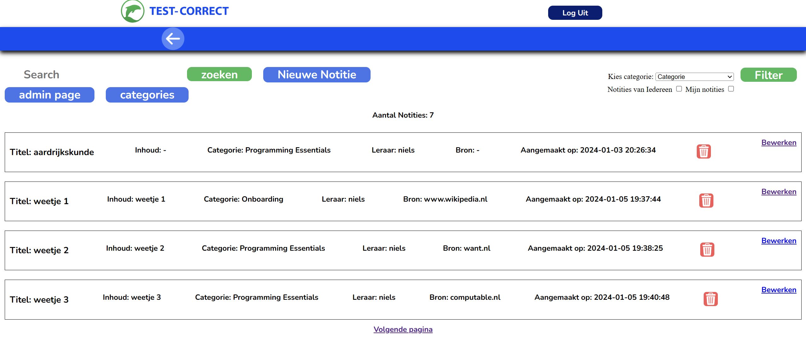

U bevindt zich op de homepagina van Test-Correct, Test-Correct richt zich op het onderwijs.
Test-Correct is er voor het voortgezet, middelbaar en hoger beroepsonderwijs.
Door het systeem van Test-Correct is het voor zowel de docent als de leerling/student mogelijk in te zien waar hun hiaten ontstaan tijdens hun leerproces.
Wij staan er voor dat effectief leren een persoonlijke en interactieve benadering vraagt. Hierdoor leert iedere student van de ander en kan zich naar eigen potentie ontwikkelen.
Docenten kunnen bij Test-Correct notities aanmaken, bewerken en verwijderen.
Binnen de omgeving van Test-Correct beschikt de gebruiker over diverse features waaronder:
Een zoekfunctie om door notities te kunnen zoeken, de mogelijkheid om een nieuwe notitie aan te maken,
een admin page voor docenten die admin zijn en een categorie pagina.
Notities kunnen worden gefilterd op categorie en op notities die van u zelf zijn.
Omdat u bij Test-Correct een eigen account krijgt
, kunt u als u met uw eigen account bent ingelogd de notities van iedereen zien en de notities die alleen u heeft aangemaakt.
Docenten kunnen binnen hun omgeving van Test-Correct Categorieën bekijken, bewerken en verwijderen.
Categorieën kunt u koppelen aan uw notities.